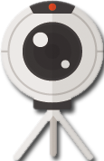

ИНФОГРАФИКА VR
Виртуальная реальность — созданный техническими средствами мир, передаваемый человеку через его ощущения: зрение, слух, обоняние, осязание и другие. Виртуальная реальность имитирует как воздействие, так и реакции на воздействие.
В 1961 году компания Philco Corporation разработала первые шлемы виртуальной реальности Headsight для военных целей, и это стало первым применением технологии в реальной жизни.
Отцом виртуальной реальности по праву считается Мортон Хейлиг. В 1962 он запатентовал первый в мире виртуальный симулятор под названием «Сенсорама».
В 80-е годы компания VPL Research разработала более современное оборудование для виртуальной реальности. Появился термин "виртуальная реальность".
Австралийка Джули Мартин соединила виртуальную реальность с телевидением.
1 августа 2012 года малоизвестный стартап Oculus запустил на платформе Kickstarter кампанию по сбору средств на выпуск шлема виртуальной реальности. Необходимые 250 тысяч долларов были собраны уже за первые четыре часа.
В 2014 году Facebook приобрела компанию Oculus VR за $2 млрд.
Спустя три с половиной года, 6 января 2015 года, начались предпродажи первого серийного потребительского шлема виртуальной реальности Oculus Rift CV1. Вся первая партия шлемов была раскуплена за 14 минут.
Крупные компании выпускают собственные гарнитуры виртуальной реальности (HTC Vive, Oculus Rift, PlayStation VR), при этом разрабатывая эксклюзивные игры и программное обеспечение только под них.
К 2022 году рынок виртуальной, дополненной и смешанной реальности достигнет $150 млрд. Последние годы росту способствовало общее расширение аудитории, растущий спрос среди здравоохранения, промышленности, маркетинга и других областей.
СТАТИСТИКА ИСПОЛЬЗОВАНИЯ
Выберите фрагмент
Детальная информация об использовании VR устройств на рынке.
ВИДЫ VR КОНТРОЛЛЕРОВ
Контроллеры, использующие BLUETOOTH
Контроллеры, улавливающие движения игрока
Контроллеры, имитирующие игровые предметы
Позволяет отслеживать движения контроллера за счёт изменения интенсивности магнитного поля в различных направлениях. Преимуществом данного метода является точность, с которой отслеживаются движения, но только в контролируемых условиях.
Преимущества данного подхода в том, что он очень прост в настройке и дешев с точки зрения производства. Недостатки заключаются в том, что трекинг с помощью данной технологии недостаточно точен, а также шлем не сможет отслеживать контроллеры, находящиеся не в зоне видимости шлема, например за спиной у пользователя VR.
Данный метод трекинга работает по принципу отражения радиоволн от контроллера, что позволяет определить местоположение. Однако, данный метод один из самых непопулярных, так как не позволяет добиться высокой точности трекинга.
СРАВНЕНИЕ
| Изображение |  |
|||||||||
|---|---|---|---|---|---|---|---|---|---|---|
| Модель | PlayStation VR | Valve Index | PiMAX 5k | HTC Vive Pro | HTC Vive | PiMAX 8k | Samsung Odyssey+ | ASUS HC102 | Oculus Rift S | Oculus Quest |
| Угол обзора | 100° | 130° | 170° | 110° | 110° | 170° | 110° | 95° | 110° | 100° |
| Частота обновления | 120Hz | 144Hz | 90Hz | 90Hz | 90Hz | 80Hz | 90Hz | 90Hz | 80Hz | 72Hz |
| Тип устройства | Подключаемый | Подключаемый | Подключаемый | Подключаемый | Подключаемый | Подключаемый | Автономный | Автономный | Автономный | Автономный |
| Поддерживаемая платформа | PlayStation | Steam | Steam | Steam | Steam | Steam | Steam | Steam | Oculus Store | Oculus Store |
| Цена | $348 | $1000 | $699 | $1200 | $1050 | $899 | $499 | $399 | $399 | $399 |
| Полный набор | ✔ | ✔ | ✘ | ✔ | ✔ | ✘ | ✔ | ✔ | ✔ | ✔ |
| Количество пикселей на дюйм | 9.6 | 11.07 | 12.05 | 13.09 | 9.81 | 15.02 | 13.09 | 15.15 | 11.63 | 14.4 |
| Разрешение | 960x1080 | 1440x1600 | 2560x1440 | 1440x1600 | 1080x1200 | 2560x1440 | 1440x1600 | 1440x1440 | 1280x1440 | 1440x1600 |